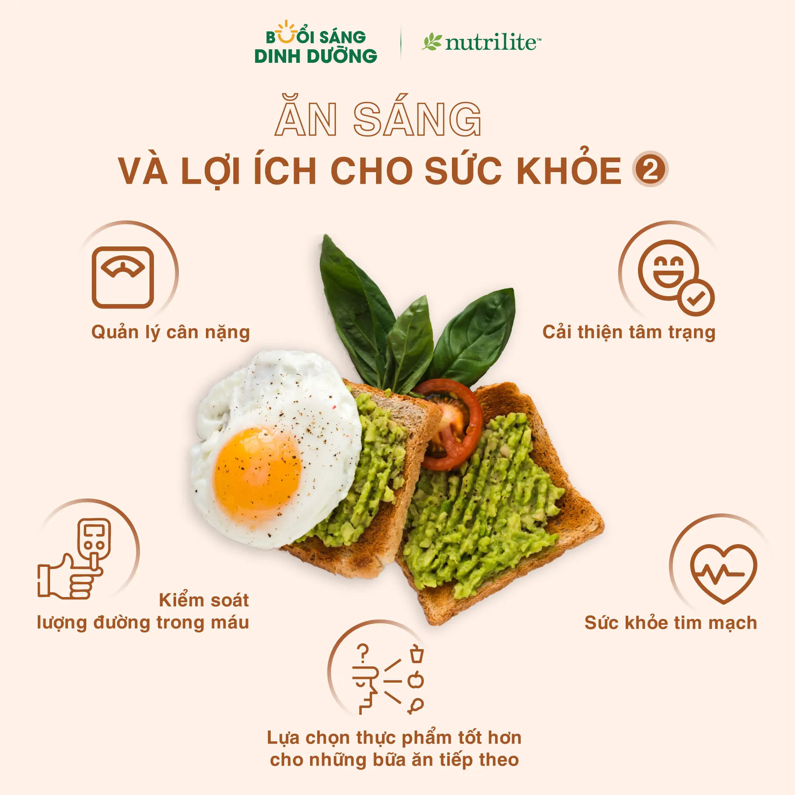

Ăn Sáng Và Những Lợi Ích Cho Sức Khỏe (2)
1. Quản lý cân nặng
Bữa sáng với carbohydrate phức hợp và chất xơ giúp quá trình tiêu hóa diễn ra chậm hơn, tạo cảm giác no lâu, hỗ trợ kiểm soát cân nặng hiệu quả.
2. Kiểm soát lượng đường trong máu
Ăn sáng giúp ổn định đường huyết, giảm nguy cơ sụt giảm năng lượng giữa buổi và hạn chế tình trạng thèm ăn quá mức.
3. Cải thiện tâm trạng
Dinh dưỡng đầy đủ vào buổi sáng giúp tinh thần tỉnh táo, hạn chế cảm giác cáu gắt và giảm mệt mỏi.
4. Sức khỏe tim mạch
Ăn sáng đều đặn có liên quan đến việc tăng mức cholesterol tốt (HDL) và giảm nguy cơ mắc các bệnh về tim mạch.
5. Lựa chọn thực phẩm tốt hơn cho những bữa ăn tiếp theo
Khi bắt đầu ngày mới bằng một bữa ăn cân bằng, bạn có xu hướng tiếp tục đưa ra những lựa chọn lành mạnh trong các bữa ăn còn lại.
Nguồn:

- The role of breakfast in health: definition and criteria for a quality breakfast. J Acad Nutr Diet. 2014; 114:S8-S26.
- Barr SI, DiFrancesco L, Fulgoni VL, 3rd.
- Astbury NM, Taylor MA, Macdonald IA. J Nutr. 2011; 141: 1381-1389.
- Pereira MA, Erickson E, McKee P, et al. J Nutr. 2011; 141: 163-168.